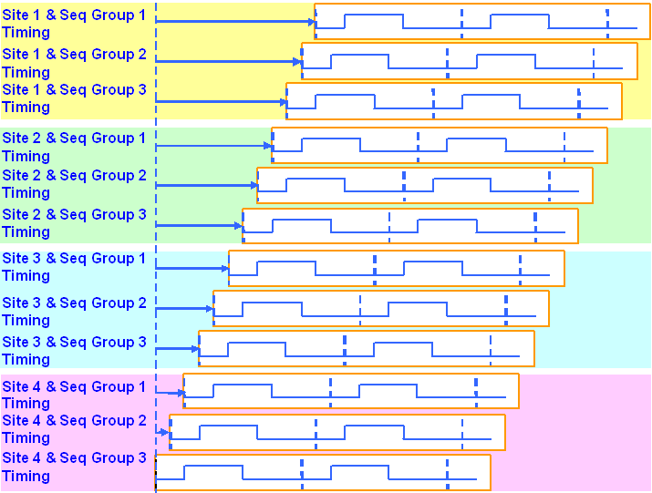
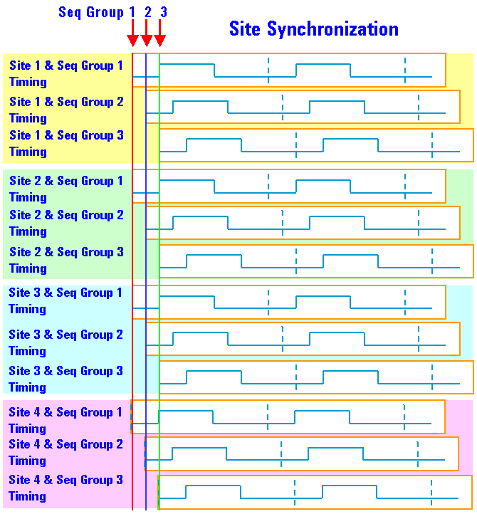

Multi-Site Synchronization in a multiport Setup
As mentioned in the section Controlling Site Synchronization, for realizing the match loop action per site and per sequencing group, SmarTest, by default, starts the sites successively (unless it finds shared pins in the pin configuration, in which case it starts all sites synchronously).
This is illustrated below.

If, however, the Site Match Mode testflow flag is set to OFF, the system aligns the time slots of every site per sequencing group as shown below. For example, sequencing group 1 can operate with the same timing on all sites. This can be useful if you need a digital pin for triggering several analog modules for example.
This is illustrated below.

For more information about multiport testing, see the multiport Testing manual.
Functional changes
- Introduced before SmarTest 6.3.2